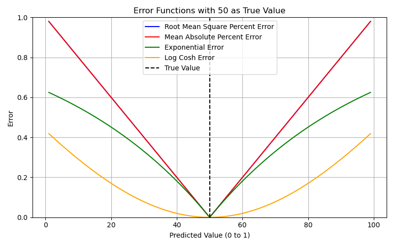
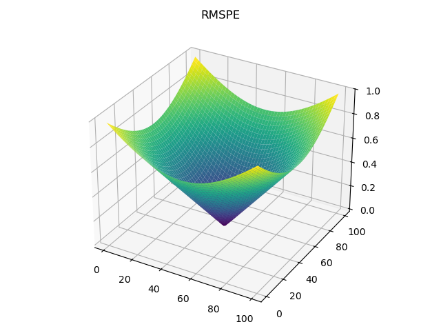
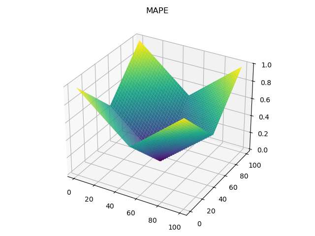
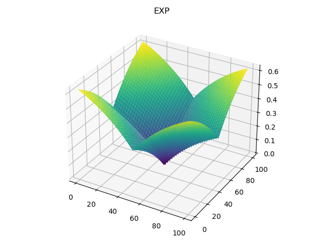
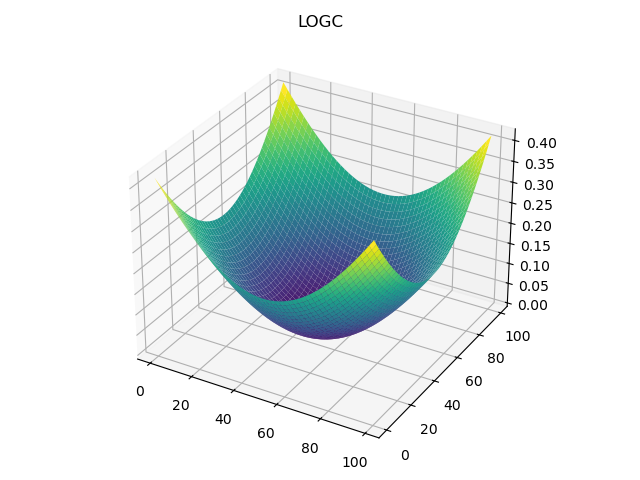

Scoring Library
This library contains the scoring functions used in the particle filter. There are five different functions that can be used.
{kind=link}

Root Mean Square Percent Error (RMSPE)
{kind=link}

Mean Absolute Percent Error (MAPE)
{kind=link}

Exponential Decay (EXP)
{kind=link}

Log Cosh (LC)
{kind=link}

Function Definitions
- Scoring.calculate_rmspe_score(pred_value: dict, true_value: dict)[source]
Calculate root mean square percentage error between matching columns in two dictionaries.
- Parameters:
pred_value (
dict) – First dictionary with column names as keys, floats as values.true_value (
dict) – Second dictionary with column names as keys, floats as values.
- Raises:
ValueError – Keys in pred_value and true_vale do not match. Prints error message.
- Returns:
Numerical value for root mean square error between matching keys of pred_value and true_value
- Return type:
float
- Scoring.calculate_mape_score(pred_value: dict, true_value: dict)[source]
Calculate mean absolute percent error between matching columns in two dictionaries.
- Parameters:
pred_value (
dict) – First dictionary with column names as keys and values.true_value (
dict) – Second dictionary with column names as keys and values.
- Raises:
ValueError – Keys in pred_value and true_vale do not match. Prints error message.
- Returns:
Numerical value for mean absolute percent error between matching keys of pred_value and true_value
- Return type:
float
- Scoring.calculate_exp_score(pred_value: dict, true_value: dict, CF=1)[source]
Calculates exponential error between matching columns in two dictionaries.
- Parameters:
pred_value (
dict) – First dictionary with column names as keys and floats as values.true_value (
dict) – Second dictionary with column names as keys and floats as values.CF (
Correction Factor; Degreeofpenalty for error function,higher value is more penalizing, optional) – DESCRIPTION. The default is 1. Valid range (0, inf]. No negative values.
- Raises:
ValueError – Keys in pred_value and true_vale do not match. Prints error message.
- Returns:
Numerical value for exponential decay error between matching keys of pred_value and true_value
- Return type:
float
- Scoring.calculate_logCosh_score(pred_value: dict, true_value: dict)[source]
Calculate Log-Cosh error between matching columns in two dictionaries.
- Parameters:
pred_value (
dict) – First dictionary with column names as keys and floats as values.true_value (
dict) – Second dictionary with column names as keys and floats as values.
- Raises:
ValueError – Keys in pred_value and true_value do not match. Prints error message.
- Returns:
Numerical value for log cosh error between matching keys of pred_value and true_value
- Return type:
float